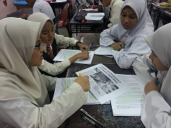
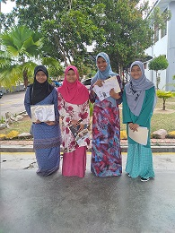
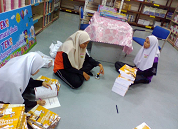
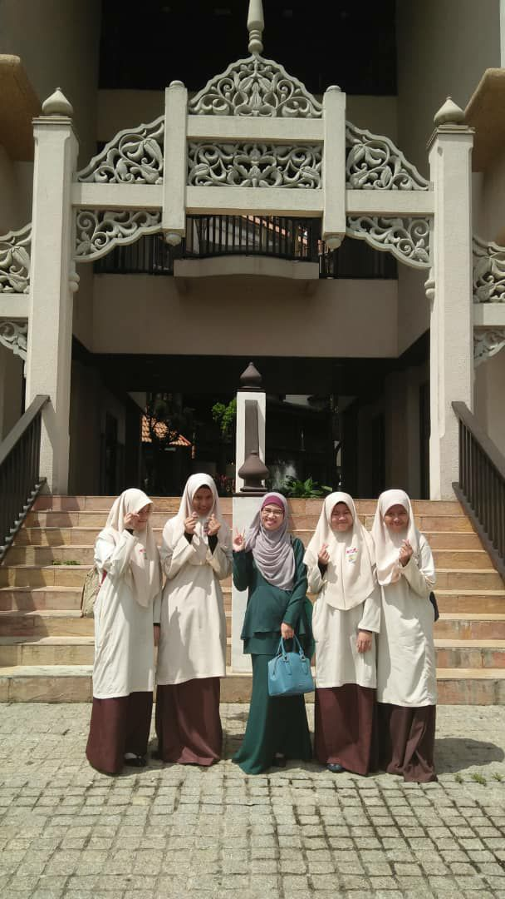
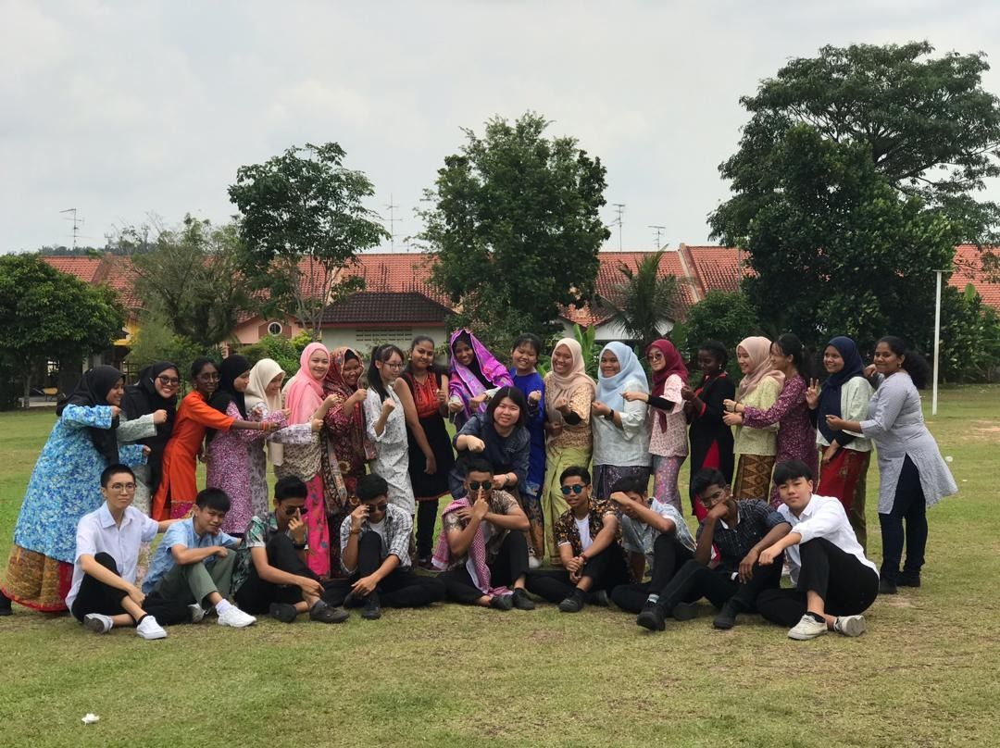
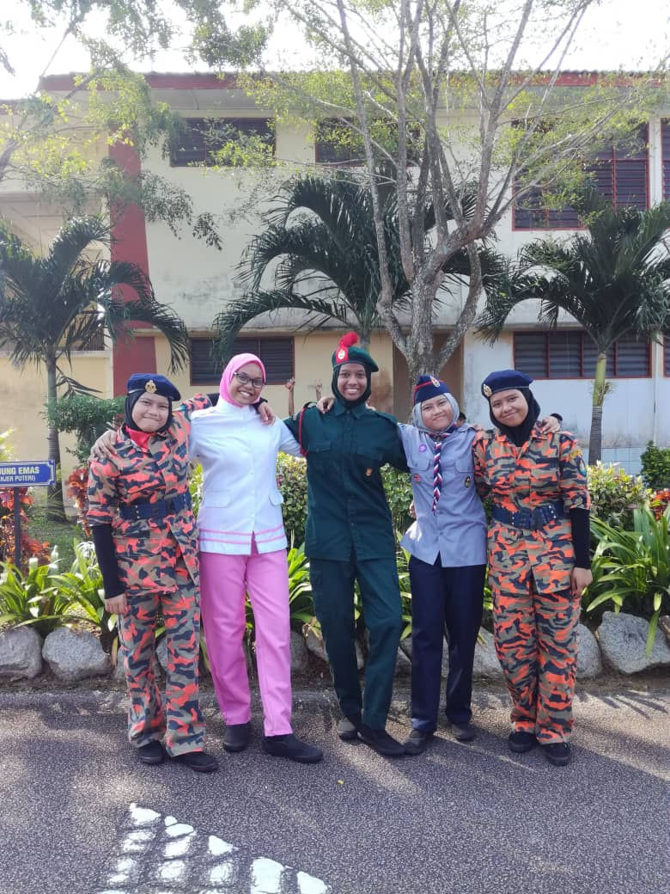
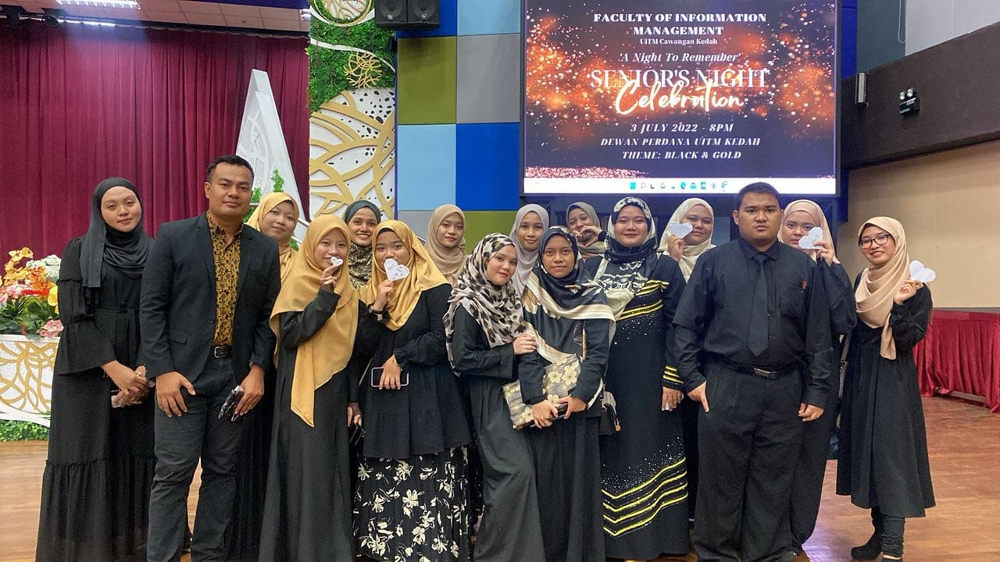
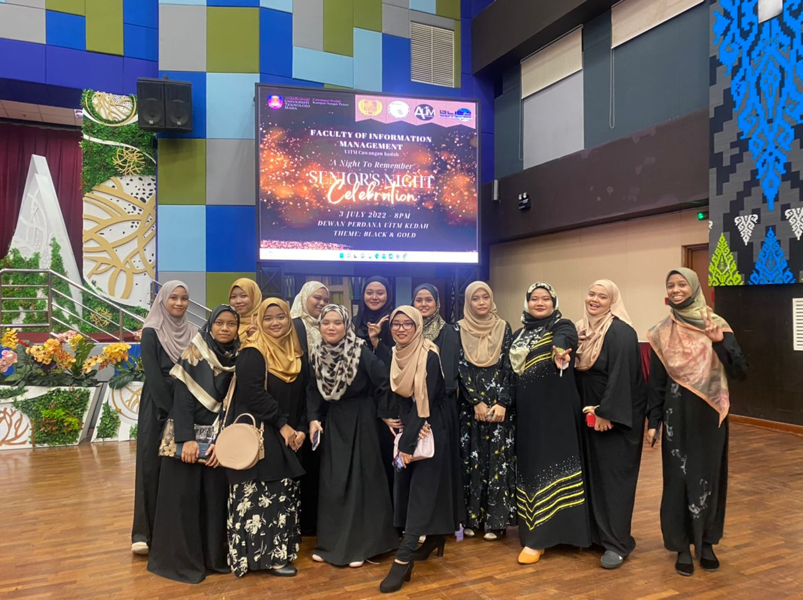

|  |  |  |
prefect of SPBT, which was to look after the giving and returning of textbooks.Above is a photo of me and my bestfriend getting our UPSR results in 2014. This relationship between me and my friend continued until high school because we attended the same school. we attended the same school as well. |
||

|  |  |  |
my home. During my time in secondary school, I was the school librarian prefect from form 3 to form 5. I have 6 bestfriends namely Rohana, Rohani, Puteri, Amirah and Syakirah. We were in the same class from form 1 to form 5. |
||
|  |  | |
Management.During I studies at this university, I had learned how to be patient even though there are many problems to deal with.I also learned how to solve my own problems and I started independently after I entered university. Besides that, I learned timely, sending assignments at a set time. The lastly, I have many good friends and always help me if I get stuck or need help and I have a very good and easy-to-approach lecturer if i need their help. |
||